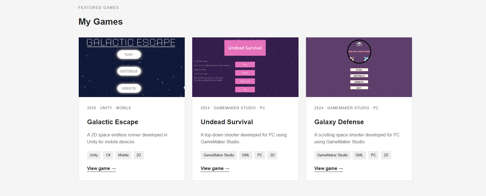

The Importance of Networking Within the Creative Industries
My thoughts on building meaningful professional connections in the games industry.
Introduction
When thinking about starting a career in game development, I believe it is easy to focus almost entirely on developing technical skills. Learning programming languages, understanding game engines and creating projects are all important, but I have started to realise that knowing how to connect with other people can be just as valuable.
The creative industries rely heavily on collaboration. Even though someone might be capable of developing a game independently, there are still opportunities to learn from other developers, share ideas and discover career opportunities through professional relationships.
Personally, I think networking is something that students should begin considering long before they finish their studies. Waiting until graduation to start building connections could mean missing opportunities to learn about the industry and meet people with similar interests.
However, I also understand why networking can seem intimidating. Approaching experienced developers or attending an event where you do not know anyone might feel uncomfortable, particularly when you are still developing your own skills.
So, how important is networking within the creative industries, and what is the best way for someone like myself to get started?
What Do We Mean by Networking?
When discussing networking in this context, I am referring to building and maintaining professional relationships rather than computer networking.
Networking involves communicating with people who share similar interests, work within the same industry or have knowledge and experience that could be valuable.
For game development, this might include programmers, artists, designers, producers, recruiters and independent developers.
I think one misconception about networking is that its only purpose is finding employment. Although professional connections can certainly help someone discover job opportunities, I believe networking should involve much more than that.
For example, speaking with another developer could introduce me to a programming technique I have never considered. Similarly, discussing a project with an artist might help me understand how visual design influences gameplay.
I also think networking should involve contributing something rather than simply expecting other people to help.
If I participate in a development community, I should be willing to share my experiences, provide feedback and support other developers when possible.
In my opinion, the most valuable professional relationships are those where both people benefit from the interaction.
Why Networking Matters in Game Development
One of the main reasons I believe networking is important is that game development involves so many different disciplines.
A commercial game might require programmers, environment artists, character designers, animators, composers, sound designers and quality assurance testers.
Even smaller independent projects can benefit from people with different abilities working together.
As someone studying Game Design and Development, I have already had opportunities to experience collaborative development through university and college projects.
For example, working on collaborative game development assignments has helped me understand how different responsibilities need to come together to produce a complete game.
Although working with classmates is not quite the same as professional networking, I believe it provides a useful introduction to the importance of communication, cooperation and building relationships.
These connections could also remain valuable after graduation. Someone I study alongside today might eventually work for a development studio, establish an independent company or collaborate on another project.
I don't think this means I should treat every classmate as a potential employment opportunity. Instead, I believe it shows why maintaining positive relationships is worthwhile.
Networking also provides opportunities to understand what employers expect from new developers.
By communicating with people already working in the industry, I could potentially learn more about the skills employers value, how recruitment processes work and which technologies are becoming increasingly relevant.

Researching the Industry Before Networking
Before approaching people within the games industry, I think it makes sense to understand who they are and what they do.
For example, if I wanted to pursue gameplay programming, I would research studios that develop games I find interesting and investigate the responsibilities of their programming teams.
I would also look into the differences between large AAA studios and smaller independent developers.
Someone working at a major studio might have a highly specialised role, while a developer at a small company could be responsible for several different aspects of production.
Understanding these differences would help me ask more relevant questions when communicating with professionals.
Organisations such as the International Game Developers Association (IGDA) are particularly useful starting points.
The IGDA maintains a directory of professional and student chapters, providing opportunities for developers to connect through regional communities and educational institutions.
I think organisations like this are valuable because they make it easier to discover communities specifically focused on game development rather than relying entirely on general social media platforms.
I would also research studios through their official websites, developer interviews and published projects.
Personally, I think taking the time to understand someone's work before contacting them demonstrates genuine interest and professionalism.
Networking Through Online Platforms
One of the biggest advantages of modern networking is that it no longer requires attending events in person.
Online platforms allow developers to communicate with people across the world, making professional networking more accessible.
For me, LinkedIn would be one of the most important platforms to use.
LinkedIn is specifically designed for professional networking, making it useful for connecting with developers, recruiters and people working at companies that interest me.
According to LinkedIn's guidance on building a professional network, the platform can help users maintain relationships with colleagues and former classmates, discover career opportunities and engage with professionals in their chosen industries.
I believe this makes LinkedIn particularly useful for students who are beginning to establish their careers.
However, I would avoid sending large numbers of connection requests without any explanation.
Instead, I think it would be more appropriate to introduce myself, explain why I am interested in someone's work and establish a genuine reason for connecting.
Another useful platform is GitHub, which allows developers to share programming projects and collaborate on software.
Although GitHub is not primarily a social networking website, I think it can still help establish professional relationships through open-source contributions, discussions and shared development interests.
I would also consider joining game development communities on platforms such as Discord.
For example, communities focused on Unity, GameMaker or independent game development could provide opportunities to ask questions, share progress and learn from other developers.
However, I believe it is important to remember that online communities still require professional behaviour.
Just because a conversation takes place through a screen does not mean respect and communication become less important.
Attending Industry Events and Conferences
Although online networking is convenient, I believe attending events in person offers experiences that are difficult to replicate.
Meeting another developer face-to-face provides opportunities for more natural conversations and can help establish stronger connections.
Events can also allow developers to demonstrate their games, receive feedback and discover what other studios are creating.
One example is ProtoPlay, which has provided opportunities for emerging UK game development teams to showcase projects developed through the Tranzfuser programme.
I find this particularly interesting because the event focuses on developers who are beginning their careers and exploring independent game development.
Another example is the London Games Festival, which brings together developers, businesses and people interested in the games industry.
I think attending events like these could be useful for understanding how the industry operates beyond an educational environment.
The UK Games Talent and Finance organisation also highlights the value of community events, peer-to-peer networking and showcasing games to potential partners and publishers.
However, I don't believe attending an event automatically makes networking successful.
If I spent the entire time avoiding conversations, I would probably gain much less from the experience.
Instead, I would try to prepare beforehand by researching the event, identifying talks or exhibitors that interest me and thinking about questions I could ask.
I would also remind myself that I do not need to speak to everyone.
Having a few meaningful conversations could be far more valuable than briefly introducing myself to dozens of people.
Online Networking Compared with Face-to-Face Networking
Personally, I think both online and face-to-face networking have advantages and disadvantages.
Online networking is convenient because it allows me to communicate with developers regardless of location.
It is also easier to share links to projects, GitHub repositories and portfolio pages during an online conversation.
For someone who is still building confidence, online discussions might provide a less intimidating starting point.
However, online communication can sometimes feel impersonal. Messages may be misunderstood, and conversations can be easily forgotten when people receive large numbers of notifications.
Face-to-face networking, on the other hand, allows for more natural interaction.
I think speaking directly with someone makes it easier to demonstrate enthusiasm and develop a genuine connection.
The main disadvantages are accessibility, travel costs and the limited number of events someone may be able to attend.
For this reason, I would prefer to combine both approaches.
I could initially discover developers and communities online, attend relevant events when possible and then maintain those relationships through professional platforms afterwards.
Presenting Myself Professionally
An important part of networking is making sure people can easily understand who I am and what I do.
This connects directly to my first blog article about creating a good online presence.
I have been developing my personal portfolio website to showcase my projects, technical skills and development experience.
If I met someone at an industry event, I could direct them towards my portfolio rather than attempting to explain every project in detail during a short conversation.
I also think having a clear introduction would be useful.
For example, I could explain that I am studying Game Design and Development, that I have experience using Unity and GameMaker, and that I am interested in gameplay programming and independent development.
This would provide a starting point for further discussion without overwhelming someone with unnecessary information.
Business cards could also be useful at physical events, particularly if they included a QR code linking directly to my portfolio.
However, I would not consider them essential. I think having an accessible website and professional contact information is more important than the physical card itself.
Professional etiquette is another consideration.
I would try to avoid interrupting conversations, demanding employment opportunities or immediately asking people for favours.
Instead, I would focus on showing interest in their work and allowing relationships to develop naturally.
Building and Maintaining Professional Relationships
One thing I think is particularly important is recognising that networking does not end after the first conversation.
If I meet someone at an event and never communicate with them again, the connection may not develop into anything meaningful.
I would therefore try to maintain contact where appropriate.
For example, after meeting another developer, I could connect with them on LinkedIn and send a short message thanking them for the conversation.
If they later shared a project update, I could engage with their work or offer constructive feedback.
However, I would avoid contacting someone repeatedly if they were not interested in continuing the conversation.
I believe respecting people's time and boundaries is an important part of professional networking.
I also think it is worth maintaining relationships with people at a similar stage of their careers.
Although experienced industry professionals can provide valuable advice, other students and junior developers can offer opportunities for collaboration and mutual learning.
In fact, some of the most useful connections I could establish might be with people who are facing similar challenges to myself.
My Advice to Other Game Development Students
If I were advising another student who wanted to begin networking, my first suggestion would be to start with people they already know.
Classmates, lecturers and people involved in collaborative projects can provide a useful foundation for developing professional relationships.
My second suggestion would be to create a portfolio before actively approaching potential employers.
I think having examples of your work makes conversations more meaningful because people can see what you are capable of creating.
I would also recommend joining at least one community related to your chosen discipline.
For example, someone interested in gameplay programming might benefit from participating in Unity or GameMaker communities, while an aspiring environment artist might prefer communities focused on 3D modelling and level design.
Another suggestion would be to participate in game jams.
Platforms such as itch.io host game jams where developers can experiment with ideas, collaborate and produce games within limited timeframes.
I think these events can provide a relatively approachable way to meet other developers while also gaining practical experience.
Finally, I would encourage students not to become discouraged if networking feels uncomfortable initially.
Like programming or game design, communication is a skill that can improve through practice.
Conclusion
Overall, I believe networking is an essential part of developing a career within the creative industries.
Although technical knowledge and creativity are important, professional relationships can provide opportunities to learn new skills, discover employment opportunities and collaborate on projects that might otherwise be difficult to complete.
For me, the best approach would be to combine online networking through LinkedIn, GitHub and development communities with opportunities to attend industry events.
I also believe networking should be approached as an opportunity to establish genuine relationships rather than simply collecting contacts.
As I continue studying game development, I want to become more involved in relevant communities, share my work and learn from people who have experience within the industry.
I am particularly interested in independent development, so connecting with other aspiring developers could eventually provide opportunities to collaborate on projects or explore new ideas.
Ultimately, I think networking is about more than knowing the right people. It is about being willing to communicate, contribute and develop relationships built on mutual respect.
After all, creating games can be challenging enough on your own. Why wouldn't I want to learn from other people who share the same passion?
References
International Game Developers Association (IGDA) — Chapters Directory. Information about professional and student game development communities and opportunities for industry networking.
LinkedIn — Build Your Professional Network. Official guidance on developing professional connections, maintaining relationships and discovering career opportunities.
UK Games Talent and Finance CIC — Programmes and Tools. Information about networking events, development communities, showcasing games and supporting emerging independent studios.
ProtoPlay — About ProtoPlay. Information about showcasing graduate game development projects and connecting emerging developers with the wider industry.
London Games Festival — Official Website. Information about industry events, developer showcases and professional networking opportunities.
itch.io — Game Jams. A platform for discovering game development events and opportunities for collaboration.
Matthew Peacock — Personal Portfolio. Personal game development projects, technical skills and portfolio work.
Matthew Peacock — GitHub Profile. Programming repositories and development projects.